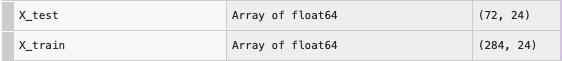

Business Case
Message from the ABC Grocery Team -
Hello Data Scientist,
We cannot believe how much value you're adding! Since you're on a roll, we've got another task for you..
We're looking to diversify slightly, and promote Ed Sheeran's new album. We've recently purchased some data around the listening habits of our customers, as well as which customers purchased his last album.
We obtained this data for 365 of our customers. It contains the percentage of historical listening time allocated to each of 100 artisit - will this be a problem?
Perhaps you could try and build a model, that would predict the customers who might be interested in his new album? If there is potential, we could look to purchase updated listening habits data for out full customer base.
Thanks in advance,
ABC Grocery Web Team
Abstract
- Principal Component Analysis is often used as a Dimensionality Reduction technique that can reduce a large set of variables down to a smaller set that still contains most of the original information.
- The task of this project is to analyze the historic data of 365 customers and predict if they would be interested in Ed Sheeran's new album as the ABC Grocery Team wants to diversify.
- Principal Component Analysis will help me understand the huge number of of unlabelled columns as there are 100 different artists and I do not have any information about the artisits.
Introduction
The ABC Grocery Team is looking to diversify and promote Ed Sheeran's new album and the team has also purchased the data around the listening habits of ABC's customers. They also have the data for the customers who purchased his last album. They have collected the data for 365 customers who have listened to 100 differnt artists in the past. The Team has asked me to to figure out the customers who will be interested in his new album. This is a classic example of a Classification Task but the team has provided a wide range of data of 100 different unlabelled Artists. Principal Component Analysis will help me reduce this huge dimensionality in the data into fewer dimensions by preserving most of the dimensions, thus reducing the number of dimensions to work on and making the data less wide. Once I get the columns, I will be able to perform Classification Task on the reduced data. PCA will help me save a lot of computational cost as the data would be reduced and manageable. Hence, PCA is the go to method in this case.
Imlpementation
1. Reading the data
- The ABC Grocery team has provided us with excel files that contain data for customer, the artisis they listen to and the time they listen to each artist.
- For reading the data I will use the Pandas library. Pandas has the read_csv functionality to read excel files.
- I will convert the excel data into DataFrame as Pandas DataFrames are easy for Data Manipulation.
2. Data Preprocessing
- For implementing PCA I will have to fit the model on the training data and then test on the unseen data. For getting the train and test sets ready, I will be following the below tasks:
- Step 1 - Drop User ID:
User ID is not an input variable and it will not be used in dimensionality reduction hence, I will eliminate it.
To achieve this - I will use the drop functionality of pandas to remove the column. - Step 2 - Shuffle the data:
It is a best practice to shuffle the data before performing any further steps. If there is any unknown orderding in the data shuffling will help me eliminate this ordering and increase randomness in the data. For example, if the data is sorted based on user ids, on ascending or descending order, based on the users who listened to most artisits. Could be anything - and I want to eliminate this. Therefore, I will shuffle the data.
To achieve this - I will user the shuffle functionality of pandas to eliminate this ordering. This method takes the DataFrame as a parameter to shuffle the data. - Step 3 - Check the class balance:
Class balance will help me understand if there is an equal distribution of data. Class balance will be performed on the the purchased column as I want to know the people who listened to a particular artist, bought the album or not.
To achieve this - I will use the value_counts functionality of Pandas and normalize the results to get a percentage to make things more understandable.
The below image shows that the data is well balanced. - Step 4 - Deal with Missing Values:
Eliminate missing values if there are any.
To achieve this - I will use the dropna functionality of Pandas to eliminate the all the missing values.
The data does not have any missing values. - Step 5 - Split Input and Output variables:
To bifurcate the data into input and output variables using X and y respectively.
To achieve this - I will create two variables X and y where I will eliminate the output column purchased_album in the X variable, i.e. the X variable will contain all the data except the prediction column purchased_album and the y variable will contain just the data for prediction column purchased_album. - Step 6 - Split Training and Test sets:
To bifurcate the X and y variables into training and test sets:
To achieve this - I will be importing the train_test_split library from sklearn.model_selection that helps in splitting the X,y data into X_train, X_test, y_train, y_test.
The test_train_split takes paratmeters as follows:
X,y: Where X and y are are input and output variables.
test_size: The size of testing and training. I want the training size to be 80% and the test size to be 20% therefore, I will use 0.2 as the value for test_size.
stratify: Stratify = y will mean that my training and test sets will have the same proportion of 1's and 0's. This is really helpful in classification problems. - Step 6 - Feature Scaling:
Feature Scaling for PCA is very important as the algorithm can successfully judge the correlations between the variables and effectively create Principle Components for us.
To achieve this - I will use Standardization. To use standardization I will be importing StandardScaler from sklearn.preprocessing to bring in the preprocessing functionality.
I will apply the standard_scaler to X_train object by using fit_transform. I will use fit_transform as it will fit the transformations based on the training data and overwrite the X_train object.
I will also use the same for the X_test object, but instead of using fit_transform I will use just use transform and this just means that the scaling is based of the rules from the training data rather than the rules of the test set itself.
3. Model Building
- So now my data is ready for implementing PCA. For that I will follow:
- Step 1 - Instantiate the object
To do this I will create an object called pca that will hold the functionalities of PCA. To implement this I will first have to import PCA functionality from sklearn.decomposition.
The parameter for PCA would be:
n_components: I will set this to None which means there will be as many components as there are columns. I can also write this as specific components or proportion of components which will create the required number of components to explain the specified percentage of variance.
After Instantiating the object I will fit PCA on X_train object and not use fit_transform as I want to check the variance at each number of component, so that I can get an idea of how many number of components I want to choose. - Step 2 - Extract explained variance across components
To get the variance for each number of components I will use an attribute of the PCA object called explained_variance_ratio.
Next I will create the cumulative sum of the results i.e. the cumulative variance after each number of components. I will do this by using cumsum() - Step 3 - Plotting the Results
The explained variance and explained cumutaive variance is very difficult to understand in a tabular format hence, I will plot the results using matplotlib
I will declare a list in the range of 1 to 100 components to plot variance and plot two different plots to explain the explained and cumulative variance after each number of components.
4. Results
-
From the above plot we can conclude that:
- In the first plot first component explains most of the variance and each subsequent components explains less and less.
- The second plot gives me a nice smooth curve.
- The plots do not give an exact indication of the number of components I should be using as there is no right or wrong answer. It is the tradeoff between the number of component I am happy dealing with and the amount of variance I want explained.
- From the second graph it can be seen that around 75% variance is explained by around 20 components. So as a starter I will use 20 components for classification.
- Training the Model with obtained components
I will use the same steps I discussed above for instantiating the object and implementing PCA, but this time instead of all the components, I will use 0.75 as 75% of the components explain most of the data.
From the above figure, I can see that 75% of data is explained by 24 components. - Apply PCA with selected number of components
I have have the number of components using PCA to define 75% of my data by using 24 components therefore, now I will apply a classification strategy on these 24 components or 24 columns.
I will use the simple RandomForestClassifier that I will import from the sklearn.ensemble library to train the data on X_train and y_train objects. - Assessing classification accuracy on test set:
I will use the predict functionality to predict the results on the test set by passing on the X_test object.
After this, I will be using the accuracy_score functionality to assess these predictions by passing the y_test object and the predictions object that we obtained above.
After running the above step, it is observed that I get an Accuracy Score of 93%.
This concludes that I have obtained a classification model with the accuracy of 93% just by using 24 components instead of the original 100 components.
5. Conclusion
- From the above analysis I can strongly say that instead of using all the 100 variables provided, I can just use 24 variables to predict if the album will be purchased or not. And I can confidently go to the ABC Grocery Team and suggest that they get some up to date listening data and I can apply this model to predict which customer are highly likely to be interested in Ed Sheeran's new album.